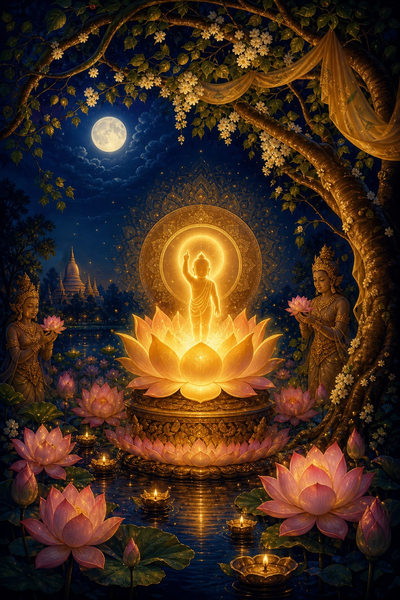

Vesak Full Moon
සම්බුදු තෙමඟුල
The Three Sacred Events of Vesak
Birth Enlightenment Parinibbāna

Digital Vesak Pandol
Vesak Full Moon
The Three Sacred Events of Vesak
Birth Enlightenment Parinibbāna

People's Pay
Vesak Blessing
On this sacred Vesak occasion, may the teachings of compassion, loving-kindness and wisdom illuminate every heart.
සියලු සත්ත්වයෝ නිදුක් වෙත්වා, නිරෝගී වෙත්වා, සුවපත් වෙත්වා.